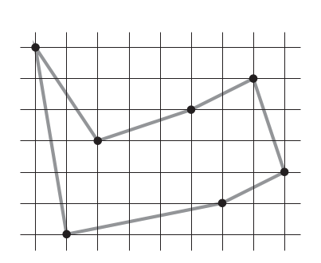
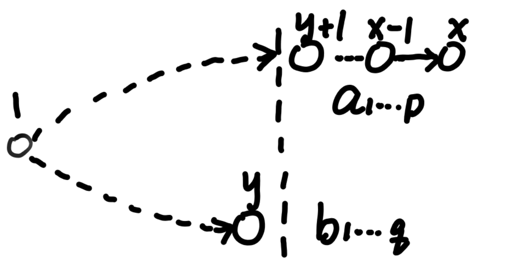
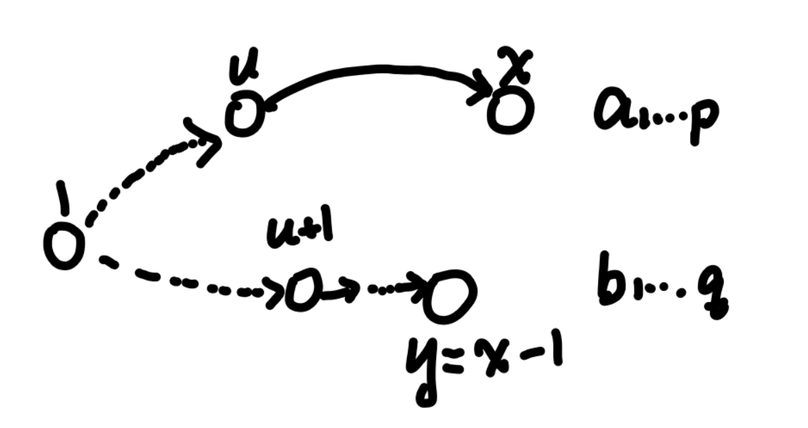

问题求解（二） Open Topic III 笔记
选题为 13-2, 讲解 TC Problem 15-3: Bitonic euclidean traveling-salesman problem.
演示文稿: 详见 Slide.
问题引入
双调欧几里得旅行商问题
欧几里得平面上有 \(n\) 个点, 每个点的横坐标均不相同, 从最左点沿某路径到达最右点, 再从最右点沿某路径到最左点, 使得除了初始点外, 每个点均恰好被经过一次, 求路径长度的最小值.

(Cormen, T. H., Leiserson, C. E., Rivest, R. L., & Stein, C. (2022). Introduction to algorithms. MIT press. p405)
形式化地，设每个点按横坐标从小到大排序后重编号为 \(1\) 至 \(n\). 将序列 \(2..n\) 划分为两个单调递增的序列(可能为空) \(\lbrace a_i\rbrace, 1\le i\le p\) 和 \(\lbrace b_i\rbrace, 1\le i\le q\), \(p+q=n-1\). 不妨设 \(a_p=n\), 并另记 \(a_0=b_0=1\), 求划分方法使得 \[ S=\sum_{i=0}^{p-1}d(a_i, a_{i+1})+\sum_{i=0}^{q-1}d(b_i, b_{i+1})+d(b_q, n) \] 最小, 其中 \(d(u, v)\) 表示编号为 \(u\) 和 \(v\) 的两点的欧几里得距离. 后文的讨论基于该转化后问题.
设计动态规划算法
设 \(f[x, y] (x>y\ge 1)\) 表示将序列 \(2..x\) 划分成 \(a_{1..p}\) 和 \(b_{1..q}\) 时 \(\displaystyle \sum_{i=0}^{p-1}d(a_i, a_{i+1})+\sum_{i=0}^{q-1}d(b_i, b_{i+1})\) 的最小值, 满足 \(a_p=x\) 且 \(b_q=y\). 若 \(y\) 等于 \(1\) 说明 \(b\) 仅含 \(b_0=1\).
边界条件为 \(f[2, 1]=d(1, 2)\).
分以下两种情况讨论:
- 当 \(x-1 > y\ge 1\) 时, 这种情况下 \(y+1..x\) 都会属于 \(a_{1..p}\), 那么去掉 \(x\) 后, 把 \(x-1\) 当成最后的节点, 会形成 \(f[x-1, y]\) 的子问题. 转移方程为
\[ f[x,y]=f[x-1,y]+d(x-1,x). \]

- 当 \(x-1=y\ge 2\) 时, 这种情况下 \(x\) 一定存在一个小于 \(y\) 的前驱节点 \(u\), 那么 \(u+1..x-1\) 都是属于 \(b\) 的. 去掉 \(x\) 后, 把 \(a\) 和 \(b\) 调换一下, 发现形成了 \(f[x-1, u]\) 的子问题, 转移方程为
\[ f[x, x-1]=\min_{1\le u<x-1}\lbrace f[x-1, u] + d(u, x)\rbrace. \]

于是我们得到了完整的状态转移方程为:
\[ \begin{gather*} f[2, 1]=d(2, 1);\\ f[x, y]=f[x-1,y]+d(x, x-1), \text{when } x-1>y\ge 1;\\ f[x, x-1]=\min_{1\le u<x-1}\lbrace f[x-1, u] + d(u, x)\rbrace, \text{when } x\ge 3. \end{gather*} \]
如何统计最终答案?
观察到 \(f[n, u](1\le u<n)\) 和 \(S\) 仅差一项 \(d(u, n)\), 于是 \[ S=\min_{1\le u<n}\lbrace f[n, u]+d(u, n)\rbrace. \]
于是我们得到了一个时间复杂度为 \(O(n^2)\), 空间复杂度为 \(O(n^2)\) 的算法.
时间复杂度证明:
共有 \(\sum_{1\le j<i\le n}1=\binom{n}{2}=\frac{n(n-1)}{2}\) 种状态, 子问题图的点数为 \(|V|=\frac{n(n-1)}{2}\). 对于 \((x, y), 1\le y\le x-2\) 的状态, 在子问题图中仅有指向 \((x-1,y)\) 的一条出边; 对于 \((x, x-1), 3\le x\le n\), 有指向 \((x-1, u), 1\le u \le x-2\) 共 \(x-2\) 条出边. 故总边数为 \[ |E|=\sum_{x=3}^n\sum_{y=1}^{x-2}1+\sum_{x=3}^n(x-2)=(n-1)(n-2). \] 故时间复杂度为 \(O(|V| + |E|)=O(n^2)\).
优化状态数
接下来我们尝试对这个动态规划做一些优化, 想办法"压缩"子问题图. 在上面的解法中, 有相当多的状态仅有一条出边, 可以尝试用数学方法缩减状态数量!
对于状态转移方程中的第二项, 可以如下进行推导 \[ \begin{aligned} f[x,y]&=f[x-1,y]+d(x, x-1)\\ &=f[x-2, y]+d(x-1, x-2)+d(x, x-1)\\ &=\cdots\\ &=f[y+1, y]+d(y+2, y+1)+\cdots+d(x, x-1)\\ &=f[y+1, y]+D(x)-D(y+1), \text{when } 1\le y\le x-2. \end{aligned} \] 其中使用了前缀和, \(\displaystyle D(x)=\sum_{i=2}^x d(i, i-1)\).
把它代入第三项, 有
\[ \begin{aligned} f[x, x-1]&=\min_{1\le u<x-1}\lbrace f[x-1, u]+d(u, x)\rbrace\\ &=\min\lbrace f[x-1, x-2], \min_{1\le u<x-2}\lbrace f[u+1, u]+D(x-1)-D(u+1)+d(u, x)\rbrace\rbrace\\ &=\min\lbrace f[x-1, x-2], \min_{2\le u\le x-2}\lbrace f[u, u-1]+D(x-1)-D(u)+d(u-1, x)\rbrace\rbrace\\ &=\min_{2\le u\le x-1}\lbrace f[u, u-1]+D(x-1)-D(u)+d(u-1, x)\rbrace, \text{when }x>1. \end{aligned} \]
把它代入 \(S\), 同理有
\[ S=\min_{2\le u\le n}\lbrace f[u, u-1]+D(n)-D(u)+d(u-1, n)\rbrace. \]
作代换 \(g[x]=f[x, x-1], x\ge 2\), 得到如下新的转移方程
\[ \begin{gather*} g[2]=d(2, 1);\\ g[x]=\min_{2\le u\le x-1}\lbrace g[u]+D(x-1)-D(u)+d(u-1, x)\rbrace, \text{when }x\ge 3. \end{gather*} \]
且最终答案 \[ S=\min_{2\le u\le n}\lbrace{g[u]+D(n)-D(u)+d(u-1, n)}\rbrace. \]
时间复杂度 \(O(n^2)\), 空间复杂度 \(O(n)\).
变种
我们设计的动态规划算法在 \(O(n^2)\) 时间、\(O(n)\) 空间内解决了双调欧几里得旅行商问题, 其中空间无法再优化, 已达到最优.
对于时间, 瓶颈在于状态转移的第二个式子, 决策点的得到必须需要枚举所有的 \(2\le u\le x-1\). 如果可以运用数据结构, 或是具有决策单调性等性质, 快速得到最小值的决策点, 便可以继续优化复杂度. 然而, 在原问题中, 欧几里得距离难以处理, 并且该问题不具有决策单调性的性质, 故笔者暂时没有好的想法.
但若是把欧几里得距离换为曼哈顿距离, 那么可以进一步使用平衡树等数据来优化转移, 可以使得最终的时间复杂度为 \(O(n\log n)\), 与排序的时间复杂度相同.
容易发现, 在曼哈顿距离的情况下, 第二个转移方程可以进一步写为
\[ \begin{aligned} g[x]&=D(x-1)+\min_{2\le u\le x-1}\lbrace g[u]-D(u)+|X_x-X_{u-1}|+|Y_x-Y_{u-1}|\rbrace\\ &=D(x-1)+X_x+\min_{2\le u\le x-1}\lbrace g[u]-D(u)-X_{u-1}+|Y_x-Y_{u-1}|\rbrace\\ \end{aligned} \]
分类讨论 \(Y_x\) 和 \(Y_{u-1}\) 的关系. 对于 \(Y_{u-1}\le Y_x\) 的, 有 \[ s_1=D(x-1)+X_x+Y_x+\min_{2\le u\le x-1, Y_{u-1}\le Y_x}\lbrace g[u]-D(u)-X_{u-1}-Y_{u-1}\rbrace \]
同理, 对于 \(Y_{u-1}> Y_x\) 的, 有
\[ s_2=D(x-1)+X_x-Y_x+\min_{2\le u\le x-1, Y_{u-1}> Y_x}\lbrace g[u]-D(u)-X_{u-1}+Y_{u-1}\rbrace \]
则 \(g[x]=\min\lbrace s_1, s_2\rbrace\). 可以使用两棵平衡树以 \(Y_i\) 为 \(key\) 维护 \(\min\) 后的值, 从而在 \(O(\log n)\) 时间内得到最小值的决策点并转移. 故总时间复杂度为 \(O(n\log n)\).
总结
本文以双调欧几里得旅行商问题为例, 讲解了其中的动态规划的设计方法, 并进行优化, 最后得到了 \(O(n^2)\) 时间复杂度, \(O(n)\) 空间复杂度的算法. 并且对变种问题展开讨论, 得到了 \(O(n\log n)\) 时间复杂度的算法.